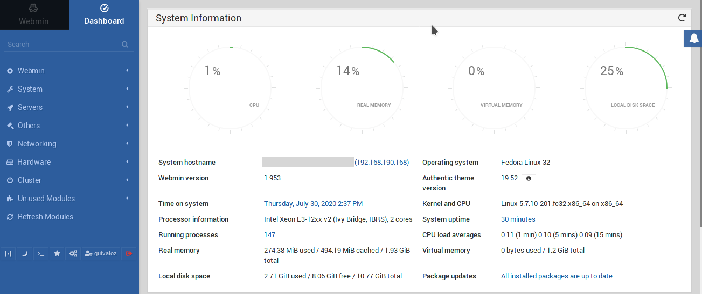

Webmin instalación en Fedora Server
Webmin es una herramienta de configuración de sistemas accesible vía web para sistemas Unix, como GNU/Linux y OpenSolaris. Con él se pueden configurar aspectos internos de muchos sistemas libres, como el servidor web Apache, PHP, MySQL, DNS, Samba, DHCP, entre otros.
30 July 2020
Para este apunte se utilizó Fedora Server versión 32.
Instalar Webmin
Crear un archivo para configurar el repositorio
$ sudo nano /etc/yum.repos.d/webmin.repo
Con este contenido
[Webmin]
name=Webmin Distribution Neutral
baseurl=http://download.webmin.com/download/yum
enabled=1
gpgcheck=1
gpgkey=http://www.webmin.com/jcameron-key.asc
Ejecutar
$ sudo dnf update
$ sudo dnf install webmin
Al terminar da este mensaje
Webmin install complete.
You can now login to https://SERVIDOR:10000/
as root with your root password.
Configurar el muro de fuego
Sigue configurar el firewall para que se abra el puerto 10000.
Por defecto la zona activa se llama FedoraServer
$ sudo firewall-cmd --get-active-zones
FedoraServer
interfaces: enp1s0
Revise los los servicios, por defecto son...
$ sudo firewall-cmd --zone=FedoraServer --list-services
cockpit dhcpv6-client ssh
Por defecto no hay puertos
$ sudo firewall-cmd --zone=FedoraServer --list-ports
Agregue el puerto 10000
$ sudo firewall-cmd --zone=FedoraServer --add-port=10000/tcp --permanent
$ sudo firewall-cmd --reload
$ sudo firewall-cmd --zone=FedoraServer --list-ports
Ingresar con el navegador de internet a...
https://SERVIDOR:10000/
Agregar un usuario de webmin por la terminal
Como desde la instalación de Fedora Server bloqueo al usuario root es necesario crear manualmente un primer usuario de Webmin
Editar
$ sudo nano /etc/webmin/miniserv.users
Agregar una línea con su usuario, por ejemplo 'guivaloz'
guivaloz:x:0
Editar
$ sudo nano /etc/webmin/webmin.acl
Copie y pegue la línea de root, cambie solo el usuario
root:access privileges...
guivaloz:access privileges...
Cambiar la contraseña del usuario 'guivaloz' por 'PA555W0RD'
$ sudo /usr/libexec/webmin/changepass.pl /etc/webmin guivaloz PA555W0RD
No he encontrado una orden para recargar la configuración, así que reinicio el servidor
$ sudo systemctl reboot
De nueva cuenta, ingresar con el navegador de internet a...
https://SERVIDOR:10000/
Pruebe su usuario y contraseña.
